Architecting Resilient Systems & Leading High-Velocity Teams.
A Bachelor of Information Systems graduate with extensive experience as a Technical Lead, core programmer, and software architect. Specializing in microservices, distributed systems, high availability, and concurrency for digital banking, agri-cloud enterprise, and ultra-high-traffic news portals. Consistently recognized for handling complex troubleshooting, root cause analysis (RCA), and resolving production issues.

Adam Nur Hakim
Jakarta & Bekasi Timur, Indonesia
Core Engineering Leadership Pillars
Combining deep hands-on programming depth with strategic system design, team empowerment, and production reliability.
Distributed Systems & Scalability
Designing microservices architectures that survive peak concurrency. Proven experience building digital banking pipelines, FarmCloud agri-tech systems, and high-load content networks with active-active resilience.
Squad Leadership & Mentorship
Directing cross-functional engineering squads using Agile/Scrum & Kanban. Establishing rigorous code reviews, automated testing standards, and a high-performance culture of ownership and psychological safety.
RCA & Production Troubleshooting
Recognized for resolving complex production incidents. Leveraging Grafana observability, structured 5-Whys root cause analysis (RCA), circuit breakers, and zero-data-loss incident mitigation strategies.
Polyglot & Cloud Infrastructure
Versatile across Go, Java/Spring, Node.js/TypeScript, PHP, and SQL. Hands-on proficiency with container orchestration (Docker, Kubernetes), caching (Redis), message queues, and AWS/Cloud deployments.
Distributed Architecture & Traffic Simulator
Test the resilience patterns Adam deploys in production: auto-scaling Kubernetes pods, Redis cache absorption, asynchronous message broker buffers, and circuit breaker failover.
Root Cause Analysis (RCA) Playbook
How Adam tackles complex, mission-critical production outages: rapid triage, mitigation under SLA pressure, data integrity protection, and long-term architectural prevention.
Grafana Alert: P99 Latency > 250ms
Alert fired during month-end payroll processing. Core banking transaction endpoints showed queuing and thread pool starvation.
Database Row Lock Contention
Concurrent balance debits were locking common ledger tables synchronously. Lack of index on composite account timestamp forced full table scan locks.
Async Settlement & Redis Queue
Decoupled balance reservation (in-memory atomic decrement) from final ledger settlement via Message Broker. Added selective B-tree indexing.
Circuit Breaker & Golden Signals
Configured circuit breakers with fallback read caches. Integrated automated load testing in CI/CD pipeline to catch row locking regressions.
High Volume Farm Sync Failures
Field inspectors syncing offline agricultural data simultaneously triggered 504 Gateway Timeouts across mobile clients.
Payload Bloat & Connection Exhaustion
Synchronous multi-megabyte JSON geospatial dumps overwhelmed backend connection pools and caused PostgreSQL worker exhaustion.
Chunked Batching & Worker Scaling
Implemented chunked multipart ingest with RabbitMQ queue distribution. Horizontal pod autoscaling (HPA) dynamically scaled worker pods.
Gzip Delta Sync & Observability
Enforced incremental delta synchronization on mobile apps and set up Grafana Prometheus alerts on connection pool utilization (>75%).
Breaking News Traffic Surge
Viral national breaking news on Detik.com drove immediate 10x traffic multiplier within 90 seconds.
Cache Stampede (Thundering Herd)
A high-traffic article cache key expired simultaneously, causing thousands of concurrent requests to hit the backend database directly.
Probabilistic Early Expiration & Mutex
Introduced XFetch / probabilistic background cache recomputation with a single-flight mutex lock so only 1 request regenerated the cache.
Multi-Tier Edge & Memory Caching
Layered Varnish edge caching with Redis backend caching and pre-warmed trending article buffers.
Work Experience & Leadership Track
Proven progression from foundational hardware & network engineering to leading high-impact software engineering squads in enterprise banking, agriculture cloud, and national media.
- Lead the engineering squad using Agile/Scrum and Kanban methodologies to manage and develop digital banking products built on a distributed architecture and microservices.
- Drive system architecture and solution design to ensure scalability, high availability, fault tolerance, and concurrency for critical banking transactions.
- Coordinate with cross-functional teams to enforce engineering standards through rigorous code reviews and technical reviews.
- Perform troubleshooting, incident management, and root cause analysis (RCA) for production issues utilizing observability tools like Grafana for monitoring and logging.
- Managed a team of software developers, guiding technical design and ensuring robust software architecture for agriculture-based cloud solutions (FarmCloud).
- Oversaw code quality and implemented automated testing (unit testing, integration testing) to maintain strict engineering standards.
- Deployed and managed containerized applications using Docker and Kubernetes (k8s) to improve system concurrency and deployment efficiency.
- Developed APIs and backend services, utilizing asynchronous processing, caching (Redis), and message brokers to optimize performance.
- Led database design (ERD/UML), indexing, transaction management, and query optimization for high-volume PostgreSQL and MySQL databases.
- Ensured backend system security (authentication, data encryption, preventing SQL injections and XSS).
- Integrated third-party services (payment gateways, mapping, analytics) into the FarmCloud ecosystem.
- Developed core APIs and backend services to enable seamless data exchange and ensure optimal performance for high-traffic sites (Detik.com).
- Optimized backend performance to ensure fast page loading times and API responses under high user traffic volume.
- Integrated third-party systems such as payment gateways and analytics engines.
- Ensured system security against attacks and vulnerabilities (SQL injection, XSS) to maintain user data privacy.
- Served as Front End & Back End developer for Mayapada Fintech product.
- Integrated payment gateway APIs and built relational database concepts for financial operations.
- Maintained and developed dokter.id healthcare portal and internal cooperative (koperasi) software.
- Maintained and developed enterprise ERP and Human Resource Management System (HRMS) products.
- Supported continuous deployment of source code to corporate users and resolved bugs for future development cycles.
- Maintained and developed multiple high-traffic news and lifestyle websites (BeritaSatu, JakartaGlobe, SuaraPembaruan, Investor Daily, dll).
- Created microsites, special election event pages, and internal newsroom publishing applications.
- Developed front-end and back-end features, including complex API parsing (JSON, XML).
- PT Grand Spot Cipta Solusi (Dec 2013 – Jun 2014): IT Support Staff — Maintained local area networks (LAN), monitored production servers, and generated weekly infrastructure uptime audits.
- PT Fujisei Metal Indonesia (Jun 2013 – Dec 2013): Engineering Staff — Created product prototypes and drafted technical engineering drawings using AutoCAD.
- PT Andaman Lestari Multikreasi (Jun 2010 – Jan 2013): Programmer & Technical Support — Developed internal web applications in PHP/MySQL; managed data center servers, firewalls, and Mikrotik bandwidth routers.
- PT Telkom Indonesia (Jan 2009 – Apr 2009): Helpdesk Internship — Handled hardware diagnostics, OS crash recoveries, customer troubleshooting, and network installations.
Technical Skills & Competency Matrix
A comprehensive overview of Adam's technical stack, categorized across languages, frameworks, distributed architecture, data persistence, and DevOps observability.
Programming Languages
Frameworks & Web
Architecture & Design
Cloud, DB & Caching
DevOps & Observability
Methodologies & Leadership
Certifications & Academic Foundations
Industry recognized professional credentials combined with an academic background in Information Systems and Computer Networking.
📜 Professional Certifications
JavaScript Foundations Professional Certificate
Demonstrated core mastery of modern JavaScript paradigms, asynchronous event loops, memory management, and modern ES6+ runtime architecture.
Agile Software Development
Certified in agile methodologies, sprint ceremonies, continuous delivery workflows, and cross-functional engineering team dynamics.
🎓 Formal Academic Education
Bachelor of Information Systems (S.Kom)
Universitas Nusa Mandiri — GPA: 2.93 / 4.0
Core focus on Database Management, Software Engineering Life Cycle, and Information Systems Architecture.
Diploma in Management Information (A.Md)
Bina Sarana Informatika (BSI) — GPA: 3.00 / 4.0
Foundations in relational database design, algorithms, and business application programming.
Teknik Komputer dan Jaringan (TKJ)
SMKN 3 Bekasi — Computer networking, routing, switching, and hardware operating systems.
Connect with Adam Nur Hakim
Currently targeting Software Engineering Lead / Technical Lead roles. Open to leadership inquiries, architectural consulting, or technical collaborations.
Direct Reach Out
Available for on-site / hybrid in Greater Jakarta area & remote worldwide.
Send a Quick Message
Form will prepare a pre-filled direct email inquiry to Adam's inbox.